门户中最重要的就是搜索功能，我使用elasticsearch，elasticsearch对版本对应的要求高，需要看好elasticsearch-kibana-springboot-springcloud-springdata这些的对应，再进行操作,主要实现:
1.索引库数据导入
搭建搜索微服务，实现搜索功能。
1.1.创建搜索服务
创建module：

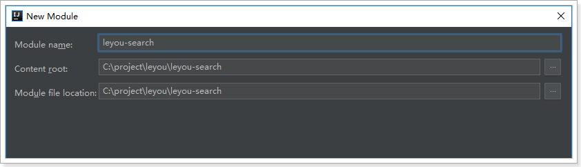
Pom文件：
<?xml version="1.0" encoding="UTF-8"?>
<project xmlns="http://maven.apache.org/POM/4.0.0"
xmlns:xsi="http://www.w3.org/2001/XMLSchema-instance"
xsi:schemaLocation="http://maven.apache.org/POM/4.0.0 http://maven.apache.org/xsd/maven-4.0.0.xsd">
<parent>
<artifactId>leyou</artifactId>
<groupId>com.leyou.parent</groupId>
<version>1.0.0-SNAPSHOT</version>
</parent>
<modelVersion>4.0.0</modelVersion>
<groupId>com.leyou.search</groupId>
<artifactId>leyou-search</artifactId>
<version>1.0.0-SNAPSHOT</version>
<dependencies>
<!-- web -->
<dependency>
<groupId>org.springframework.boot</groupId>
<artifactId>spring-boot-starter-web</artifactId>
</dependency>
<!-- elasticsearch -->
<dependency>
<groupId>org.springframework.boot</groupId>
<artifactId>spring-boot-starter-data-elasticsearch</artifactId>
</dependency>
<!-- eureka -->
<dependency>
<groupId>org.springframework.cloud</groupId>
<artifactId>spring-cloud-starter-netflix-eureka-client</artifactId>
</dependency>
<!-- feign -->
<dependency>
<groupId>org.springframework.cloud</groupId>
<artifactId>spring-cloud-starter-openfeign</artifactId>
</dependency>
</dependencies>
</project>application.yml：
server:
port: 8083
spring:
application:
name: search-service
data:
elasticsearch:
cluster-name: elasticsearch
cluster-nodes: 192.168.56.101:9300
eureka:
client:
service-url:
defaultZone: http://127.0.0.1:10086/eureka
instance:
lease-renewal-interval-in-seconds: 5 # 每隔5秒发送一次心跳
lease-expiration-duration-in-seconds: 10 # 10秒不发送就过期引导类：
@SpringBootApplication
@EnableDiscoveryClient
@EnableFeignClients
public class LeyouSearchService {
public static void main(String[] args) {
SpringApplication.run(LySearchService.class, args);
}
}1.2.索引库数据格式分析
接下来，我们需要商品数据导入索引库，便于用户搜索。
那么问题来了，我们有SPU和SKU，到底如何保存到索引库？
1.2.1.以结果为导向
大家来看下搜索结果页：

可以看到，每一个搜索结果都有至少1个商品，当我们选择大图下方的小图，商品会跟着变化。
因此，搜索的结果是SPU，即多个SKU的集合。
既然搜索的结果是SPU，那么我们索引库中存储的应该也是SPU，但是却需要包含SKU的信息。
1.2.2.需要什么数据
再来看看页面中有什么数据：

直观能看到的：图片、价格、标题、副标题
暗藏的数据：spu的id，sku的id
另外，页面还有过滤条件：

这些过滤条件也都需要存储到索引库中，包括：
商品分类、品牌、可用来搜索的规格参数等
综上所述，我们需要的数据格式有：
spuId、SkuId、商品分类id、品牌id、图片、价格、商品的创建时间、sku信息集、可搜索的规格参数
1.2.3.最终的数据结构
我们创建一个类，封装要保存到索引库的数据，并设置映射属性：
@Document(indexName = "goods", type = "docs", shards = 1, replicas = 0)
public class Goods {
@Id
private Long id; // spuId
@Field(type = FieldType.Text, analyzer = "ik_max_word")
private String all; // 所有需要被搜索的信息，包含标题，分类，甚至品牌
@Field(type = FieldType.Keyword, index = false)
private String subTitle;// 卖点
private Long brandId;// 品牌id
private Long cid1;// 1级分类id
private Long cid2;// 2级分类id
private Long cid3;// 3级分类id
private Date createTime;// 创建时间
private List<Long> price;// 价格
@Field(type = FieldType.Keyword, index = false)
private String skus;// List<sku>信息的json结构
private Map<String, Object> specs;// 可搜索的规格参数，key是参数名，值是参数值
}一些特殊字段解释：
all：用来进行全文检索的字段，里面包含标题、商品分类信息
price：价格数组，是所有sku的价格集合。方便根据价格进行筛选过滤
skus：用于页面展示的sku信息，不索引，不搜索。包含skuId、image、price、title字段
specs：所有规格参数的集合。key是参数名，值是参数值。
例如：我们在specs中存储 内存：4G,6G，颜色为红色，转为json就是：
{ "specs":{ "内存":[4G,6G], "颜色":"红色" } }当存储到索引库时，elasticsearch会处理为两个字段：
- specs.内存：[4G,6G]
- specs.颜色：红色
另外， 对于字符串类型，还会额外存储一个字段，这个字段不会分词，用作聚合。
- specs.颜色.keyword：红色
1.3.商品微服务提供接口
索引库中的数据来自于数据库，我们不能直接去查询商品的数据库，因为真实开发中，每个微服务都是相互独立的，包括数据库也是一样。所以我们只能调用商品微服务提供的接口服务。
先思考我们需要的数据：
SPU信息
SKU信息
SPU的详情
商品分类名称（拼接all字段）
品牌名称
规格参数
再思考我们需要哪些服务：
- 第一：分批查询spu的服务，已经写过。
- 第二：根据spuId查询sku的服务，已经写过
- 第三：根据spuId查询SpuDetail的服务，已经写过
- 第四：根据商品分类id，查询商品分类名称，没写过
- 第五：根据商品品牌id，查询商品的品牌，没写过
- 第六：规格参数接口
因此我们需要额外提供一个查询商品分类名称的接口。
1.3.1.商品分类名称查询
在CategoryController中添加接口：
@GetMapping("names")
public ResponseEntity<List<String>> queryNamesByIds(@RequestParam("ids")List<Long> ids){
List<String> names = this.categoryService.queryNamesByIds(ids);
if (CollectionUtils.isEmpty(names)) {
return ResponseEntity.notFound().build();
}
return ResponseEntity.ok(names);
}测试：
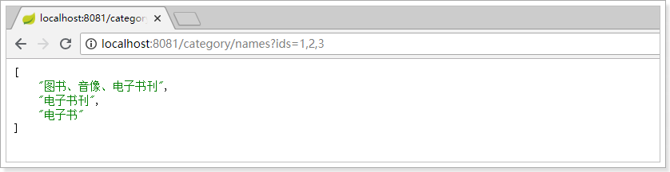
1.3.2.编写FeignClient
1.3.2.1.问题展现
操作leyou-search工程
现在，我们要在搜索微服务调用商品微服务的接口。
第一步要在leyou-search工程中，引入商品微服务依赖：leyou-item-interface。
<!--商品微服务-->
<dependency>
<groupId>com.leyou.item</groupId>
<artifactId>leyou-item-interface</artifactId>
<version>${leyou.latest.version}</version>
</dependency>
<dependency>
<groupId>com.leyou.common</groupId>
<artifactId>leyou-common</artifactId>
<version>1.0.0-SNAPSHOT</version>
</dependency>第二步，编写FeignClient
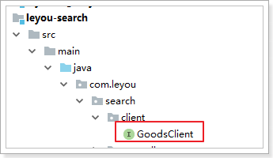
@FeignClient(value = "item-service")
public interface GoodsClient {
/**
* 分页查询商品
* @param page
* @param rows
* @param saleable
* @param key
* @return
*/
@GetMapping("/spu/page")
PageResult<SpuBo> querySpuByPage(
@RequestParam(value = "page", defaultValue = "1") Integer page,
@RequestParam(value = "rows", defaultValue = "5") Integer rows,
@RequestParam(value = "saleable", defaultValue = "true") Boolean saleable,
@RequestParam(value = "key", required = false) String key);
/**
* 根据spu商品id查询详情
* @param id
* @return
*/
@GetMapping("/spu/detail/{id}")
SpuDetail querySpuDetailById(@PathVariable("id") Long id);
/**
* 根据spu的id查询sku
* @param id
* @return
*/
@GetMapping("sku/list")
List<Sku> querySkuBySpuId(@RequestParam("id") Long id);
}以上的这些代码直接从商品微服务中拷贝而来，完全一致。差别就是没有方法的具体实现。大家觉得这样有没有问题？
而FeignClient代码遵循SpringMVC的风格，因此与商品微服务的Controller完全一致。这样就存在一定的问题：
- 代码冗余。尽管不用写实现，只是写接口，但服务调用方要写与服务controller一致的代码，有几个消费者就要写几次。
- 增加开发成本。调用方还得清楚知道接口的路径，才能编写正确的FeignClient。
1.3.2.2.解决方案
因此，一种比较友好的实践是这样的：
- 我们的服务提供方不仅提供实体类，还要提供api接口声明
- 调用方不用自己编写接口方法声明，直接继承提供方给的Api接口即可，
第一步：服务的提供方在leyou-item-interface中提供API接口，并编写接口声明：
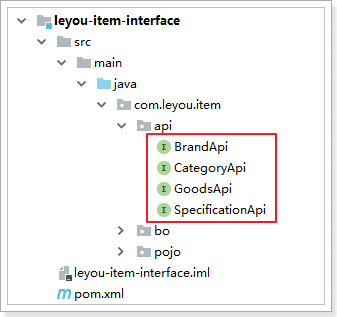
商品分类服务接口：
@RequestMapping("category")
public interface CategoryApi {
@GetMapping("names")
ResponseEntity<List<String>> queryNameByIds(@RequestParam("ids") List<Long> ids);
}商品服务接口，返回值不再使用ResponseEntity：
@RequestMapping("/goods")
public interface GoodsApi {
/**
* 分页查询商品
* @param page
* @param rows
* @param saleable
* @param key
* @return
*/
@GetMapping("/spu/page")
PageResult<SpuBo> querySpuByPage(
@RequestParam(value = "page", defaultValue = "1") Integer page,
@RequestParam(value = "rows", defaultValue = "5") Integer rows,
@RequestParam(value = "saleable", defaultValue = "true") Boolean saleable,
@RequestParam(value = "key", required = false) String key);
/**
* 根据spu商品id查询详情
* @param id
* @return
*/
@GetMapping("/spu/detail/{id}")
SpuDetail querySpuDetailById(@PathVariable("id") Long id);
/**
* 根据spu的id查询sku
* @param id
* @return
*/
@GetMapping("sku/list")
List<Sku> querySkuBySpuId(@RequestParam("id") Long id);
}品牌的接口：
@RequestMapping("brand")
public interface BrandApi {
@GetMapping("{id}")
public Brand queryBrandById(@PathVariable("id") Long id);
}规格参数的接口：
@RequestMapping("spec")
public interface SpecificationApi {
@GetMapping("params")
public List<SpecParam> queryParams(
@RequestParam(value = "gid", required = false) Long gid,
@RequestParam(value = "cid", required = false) Long cid,
@RequestParam(value = "generic", required = false) Boolean generic,
@RequestParam(value = "searching", required = false) Boolean searching
);
}需要引入springMVC及leyou-common的依赖：
<dependency>
<groupId>org.springframework</groupId>
<artifactId>spring-webmvc</artifactId>
<version>5.0.6.RELEASE</version>
</dependency>
<dependency>
<groupId>com.leyou.common</groupId>
<artifactId>leyou-common</artifactId>
<version>1.0.0-SNAPSHOT</version>
</dependency>第二步：在调用方leyou-search中编写FeignClient，但不要写方法声明了，直接继承leyou-item-interface提供的api接口：
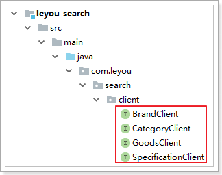
商品的FeignClient：
@FeignClient(value = "item-service")
public interface GoodsClient extends GoodsApi {
}商品分类的FeignClient：
@FeignClient(value = "item-service")
public interface CategoryClient extends CategoryApi {
}品牌的FeignClient：
@FeignClient("item-service")
public interface BrandClient extends BrandApi {
}规格参数的FeignClient:
@FeignClient("item-service")
public interface SpecificationClient extends SpecificationApi {
}是不是简单多了？
1.3.2.3.测试
在leyou-search中引入springtest依赖：
<dependency>
<groupId>org.springframework.boot</groupId>
<artifactId>spring-boot-starter-test</artifactId>
<scope>test</scope>
</dependency>创建测试类：
在接口上按快捷键：Ctrl + Shift + T
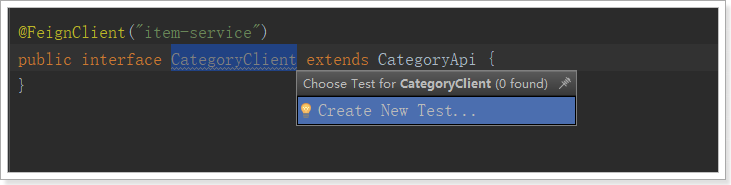
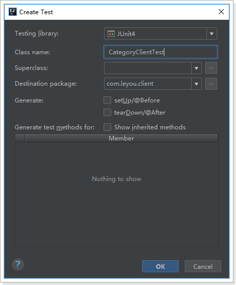
测试代码：
@RunWith(SpringRunner.class)
@SpringBootTest(classes = LeyouSearchApplication.class)
public class CategoryClientTest {
@Autowired
private CategoryClient categoryClient;
@Test
public void testQueryCategories() {
List<String> names = this.categoryClient.queryNamesByIds(Arrays.asList(1L, 2L, 3L));
names.forEach(System.out::println);
}
}结果：

1.4.导入数据
1.4.1.创建GoodsRepository
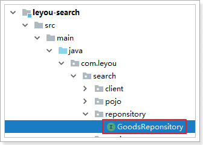
java代码：
public interface GoodsRepository extends ElasticsearchRepository<Goods, Long> {
}1.4.2.创建索引
我们新建一个测试类，在里面进行数据的操作：
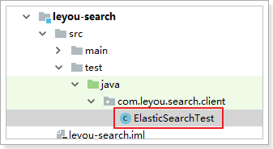
@RunWith(SpringRunner.class)
@SpringBootTest(classes = LeyouSearchApplication.class)
public class ElasticsearchTest {
@Autowired
private GoodsReponsitory goodsReponsitory;
@Autowired
private ElasticsearchTemplate template;
@Test
public void createIndex(){
// 创建索引库，以及映射
this.template.createIndex(Goods.class);
this.template.putMapping(Goods.class);
}
}通过kibana查看：
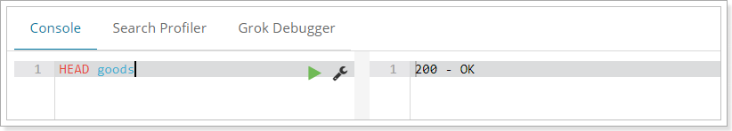
1.4.3.导入数据
导入数据其实就是查询数据，然后把查询到的Spu转变为Goods来保存，因此我们先编写一个SearchService，然后在里面定义一个方法， 把Spu转为Goods
@Service
public class SearchService {
@Autowired
private BrandClient brandClient;
@Autowired
private CategoryClient categoryClient;
@Autowired
private GoodsClient goodsClient;
@Autowired
private SpecificationClient specificationClient;
private static final ObjectMapper MAPPER = new ObjectMapper();
public Goods buildGoods(Spu spu) throws IOException {
// 创建goods对象
Goods goods = new Goods();
// 查询品牌
Brand brand = this.brandClient.queryBrandById(spu.getBrandId());
// 查询分类名称
List<String> names = this.categoryClient.queryNamesByIds(Arrays.asList(spu.getCid1(), spu.getCid2(), spu.getCid3()));
// 查询spu下的所有sku
List<Sku> skus = this.goodsClient.querySkusBySpuId(spu.getId());
List<Long> prices = new ArrayList<>();
List<Map<String, Object>> skuMapList = new ArrayList<>();
// 遍历skus，获取价格集合
skus.forEach(sku ->{
prices.add(sku.getPrice());
Map<String, Object> skuMap = new HashMap<>();
skuMap.put("id", sku.getId());
skuMap.put("title", sku.getTitle());
skuMap.put("price", sku.getPrice());
skuMap.put("image", StringUtils.isNotBlank(sku.getImages()) ? StringUtils.split(sku.getImages(), ",")[0] : "");
skuMapList.add(skuMap);
});
// 查询出所有的搜索规格参数
List<SpecParam> params = this.specificationClient.queryParams(null, spu.getCid3(), null, true);
// 查询spuDetail。获取规格参数值
SpuDetail spuDetail = this.goodsClient.querySpuDetailBySpuId(spu.getId());
// 获取通用的规格参数
Map<Long, Object> genericSpecMap = MAPPER.readValue(spuDetail.getGenericSpec(), new TypeReference<Map<Long, Object>>() {
});
// 获取特殊的规格参数
Map<Long, List<Object>> specialSpecMap = MAPPER.readValue(spuDetail.getSpecialSpec(), new TypeReference<Map<Long, List<Object>>>() {
});
// 定义map接收{规格参数名，规格参数值}
Map<String, Object> paramMap = new HashMap<>();
params.forEach(param -> {
// 判断是否通用规格参数
if (param.getGeneric()) {
// 获取通用规格参数值
String value = genericSpecMap.get(param.getId()).toString();
// 判断是否是数值类型
if (param.getNumeric()){
// 如果是数值的话，判断该数值落在那个区间
value = chooseSegment(value, param);
}
// 把参数名和值放入结果集中
paramMap.put(param.getName(), value);
} else {
paramMap.put(param.getName(), specialSpecMap.get(param.getId()));
}
});
// 设置参数
goods.setId(spu.getId());
goods.setCid1(spu.getCid1());
goods.setCid2(spu.getCid2());
goods.setCid3(spu.getCid3());
goods.setBrandId(spu.getBrandId());
goods.setCreateTime(spu.getCreateTime());
goods.setSubTitle(spu.getSubTitle());
goods.setAll(spu.getTitle() + brand.getName() + StringUtils.join(names, " "));
goods.setPrice(prices);
goods.setSkus(MAPPER.writeValueAsString(skuMapList));
goods.setSpecs(paramMap);
return goods;
}
private String chooseSegment(String value, SpecParam p) {
double val = NumberUtils.toDouble(value);
String result = "其它";
// 保存数值段
for (String segment : p.getSegments().split(",")) {
String[] segs = segment.split("-");
// 获取数值范围
double begin = NumberUtils.toDouble(segs[0]);
double end = Double.MAX_VALUE;
if(segs.length == 2){
end = NumberUtils.toDouble(segs[1]);
}
// 判断是否在范围内
if(val >= begin && val < end){
if(segs.length == 1){
result = segs[0] + p.getUnit() + "以上";
}else if(begin == 0){
result = segs[1] + p.getUnit() + "以下";
}else{
result = segment + p.getUnit();
}
break;
}
}
return result;
}
}因为过滤参数中有一类比较特殊，就是数值区间：
所以我们在存入时要进行处理：
private String chooseSegment(String value, SpecParam p) {
double val = NumberUtils.toDouble(value);
String result = "其它";
// 保存数值段
for (String segment : p.getSegments().split(",")) {
String[] segs = segment.split("-");
// 获取数值范围
double begin = NumberUtils.toDouble(segs[0]);
double end = Double.MAX_VALUE;
if(segs.length == 2){
end = NumberUtils.toDouble(segs[1]);
}
// 判断是否在范围内
if(val >= begin && val < end){
if(segs.length == 1){
result = segs[0] + p.getUnit() + "以上";
}else if(begin == 0){
result = segs[1] + p.getUnit() + "以下";
}else{
result = segment + p.getUnit();
}
break;
}
}
return result;
}然后编写一个测试类，循环查询Spu，然后调用IndexService中的方法，把SPU变为Goods，然后写入索引库：
@Test
public void createIndex(){
// 创建索引
this.elasticsearchTemplate.createIndex(Goods.class);
// 配置映射
this.elasticsearchTemplate.putMapping(Goods.class);
Integer page = 1;
Integer rows = 100;
do {
// 分批查询spuBo
PageResult<SpuBo> pageResult = this.goodsClient.querySpuBoByPage(null, true, page, rows);
// 遍历spubo集合转化为List<Goods>
List<Goods> goodsList = pageResult.getItems().stream().map(spuBo -> {
try {
return this.searchService.buildGoods((Spu) spuBo);
} catch (IOException e) {
e.printStackTrace();
}
return null;
}).collect(Collectors.toList());
this.goodsReponsitory.saveAll(goodsList);
// 获取当前页的数据条数，如果是最后一页，没有100条
rows = pageResult.getItems().size();
// 每次循环页码加1
page++;
} while (rows == 100);
}通过kibana查询， 可以看到数据成功导入：

2.实现基本搜索
2.1.页面分析
2.1.1.页面跳转
在首页的顶部，有一个输入框：
当我们输入任何文本，点击搜索，就会跳转到搜索页search.html了：
并且将搜索关键字以请求参数携带过来：
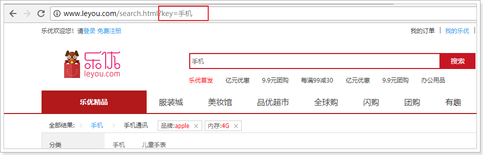
我们打开search.html，在最下面会有提前定义好的Vue实例：
<script type="text/javascript">
var vm = new Vue({
el: "#searchApp",
data: {
},
components:{
// 加载页面顶部组件
lyTop: () => import("./js/pages/top.js")
}
});
</script>这个Vue实例中，通过import导入的方式，加载了另外一个js：top.js并作为一个局部组件。top其实是页面顶部导航组件，我们暂时不管
2.1.2.发起异步请求
要想在页面加载后，就展示出搜索结果。我们应该在页面加载时，获取地址栏请求参数，并发起异步请求，查询后台数据，然后在页面渲染。
我们在data中定义一个对象，记录请求的参数：
data: {
search:{
key:"", // 搜索页面的关键字
}
}我们通过钩子函数created，在页面加载时获取请求参数，并记录下来。
created(){
// 判断是否有请求参数
if(!location.search){
return;
}
// 将请求参数转为对象
const search = ly.parse(location.search.substring(1));
// 记录在data的search对象中
this.search = search;
// 发起请求，根据条件搜索
this.loadData();
}然后发起请求，搜索数据。
methods: {
loadData(){
// ly.http.post("/search/page", ly.stringify(this.search)).then(resp=>{
ly.http.post("/search/page", this.search).then(resp=>{
console.log(resp);
});
}
}- 我们这里使用
ly是common.js中定义的工具对象。 - 这里使用的是post请求，这样可以携带更多参数，并且以json格式发送
在leyou-gateway中的CORS配置类中，添加允许信任域名：
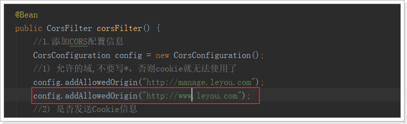
并在leyou-gateway工程的Application.yml中添加网关映射：

刷新页面试试：
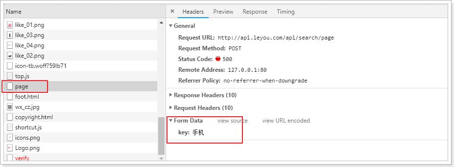
因为后台没有提供接口，所以无法访问。没关系，接下来我们实现后台接口
2.2.后台提供搜索接口
2.2.1.controller
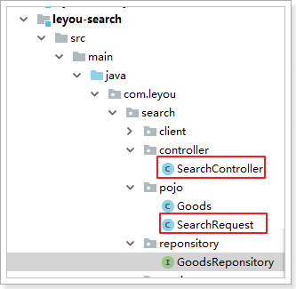
首先分析几个问题：
请求方式：Post
请求路径：/search/page，不过前面的/search应该是网关的映射路径，因此真实映射路径page，代表分页查询
请求参数：json格式，目前只有一个属性：key-搜索关键字，但是搜索结果页一定是带有分页查询的，所以将来肯定会有page属性，因此我们可以用一个对象来接收请求的json数据：
public class SearchRequest { private String key;// 搜索条件 private Integer page;// 当前页 private static final Integer DEFAULT_SIZE = 20;// 每页大小，不从页面接收，而是固定大小 private static final Integer DEFAULT_PAGE = 1;// 默认页 public String getKey() { return key; } public void setKey(String key) { this.key = key; } public Integer getPage() { if(page == null){ return DEFAULT_PAGE; } // 获取页码时做一些校验，不能小于1 return Math.max(DEFAULT_PAGE, page); } public void setPage(Integer page) { this.page = page; } public Integer getSize() { return DEFAULT_SIZE; } }返回结果：作为分页结果，一般都两个属性：当前页数据、总条数信息，我们可以使用之前定义的PageResult类
代码：
@RestController
@RequestMapping
public class SearchController {
@Autowired
private SearchService searchService;
/**
* 搜索商品
*
* @param request
* @return
*/
@PostMapping("page")
public ResponseEntity<PageResult<Goods>> search(@RequestBody SearchRequest request) {
PageResult<Goods> result = this.searchService.search(request);
if (result == null) {
return new ResponseEntity<>(HttpStatus.NOT_FOUND);
}
return ResponseEntity.ok(result);
}
}2.2.2.service
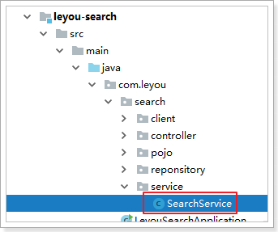
@Service
public class SearchService {
@Autowired
private GoodsRepository goodsRepository;
public PageResult<Goods> search(SearchRequest request) {
String key = request.getKey();
// 判断是否有搜索条件，如果没有，直接返回null。不允许搜索全部商品
if (StringUtils.isBlank(key)) {
return null;
}
// 构建查询条件
NativeSearchQueryBuilder queryBuilder = new NativeSearchQueryBuilder();
// 1、对key进行全文检索查询
queryBuilder.withQuery(QueryBuilders.matchQuery("all", key).operator(Operator.AND));
// 2、通过sourceFilter设置返回的结果字段,我们只需要id、skus、subTitle
queryBuilder.withSourceFilter(new FetchSourceFilter(
new String[]{"id","skus","subTitle"}, null));
// 3、分页
// 准备分页参数
int page = request.getPage();
int size = request.getSize();
queryBuilder.withPageable(PageRequest.of(page - 1, size));
// 4、查询，获取结果
Page<Goods> pageInfo = this.goodsRepository.search(queryBuilder.build());
// 封装结果并返回
return new PageResult<>(goodsPage.getTotalElements(), goodsPage.getTotalPages(), goodsPage.getContent());
}
}注意点：我们要设置SourceFilter，来选择要返回的结果，否则返回一堆没用的数据，影响查询效率。
2.2.3.测试
刷新页面测试：
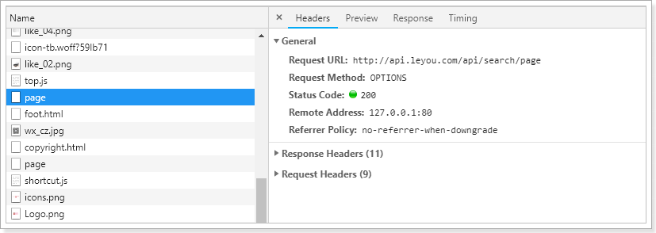

数据是查到了，但是因为我们只查询部分字段，所以结果json 数据中有很多null，这很不优雅。
解决办法很简单，在leyou-search的application.yml中添加一行配置，json处理时忽略空值：
spring:
jackson:
default-property-inclusion: non_null # 配置json处理时忽略空值结果：
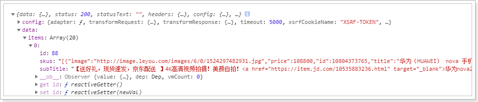
2.3.页面渲染
页面已经拿到了结果，接下来就要渲染样式了。
2.3.1.保存搜索结果
首先，在data中定义属性，保存搜索的结果：

在loadData的异步查询中，将结果赋值给goodsList：

2.3.2.循环展示商品
在search.html的中部，有一个div，用来展示所有搜索到的商品：

可以看到，div中有一个无序列表ul，内部的每一个li就是一个商品spu了。
我们删除多余的，只保留一个li，然后利用vue的循环来展示搜索到的结果：

2.3.3.多sku展示
2.3.3.1.分析
接下来展示具体的商品信息，来看图：
这里我们可以发现，一个商品位置，是多个sku的信息集合。当用户鼠标选择某个sku，对应的图片、价格、标题会随之改变！
我们先来实现sku的选择，才能去展示不同sku的数据。

可以看到，在列表中默认第一个是被选中的，那我们就需要做两件事情：
在搜索到数据时，先默认把第一个sku作为被选中的，记录下来
记录当前被选中的是哪一个sku，记录在哪里比较合适呢？显然是遍历到的goods对象自己内部，因为每一个goods都会有自己的sku信息。
2.3.3.2.初始化sku
查询出的结果集skus是一个json类型的字符串，不是js对象

我们在查询成功的回调函数中，对goods进行遍历，把skus转化成json对象集合，并添加一个selected属性保存被选中的sku：

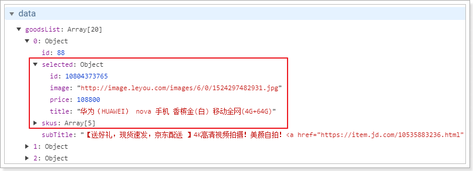
2.3.3.3.多sku图片列表
接下来，我们看看多个sku的图片列表位置：

看到又是一个无序列表，这里我们也一样删掉多余的，保留一个li，需要注意选中的项有一个样式类：selected
我们的代码：
-

注意：
- class样式通过 goods.selected的id是否与当前sku的id一致来判断
- 绑定了鼠标事件，鼠标进入后把当前sku赋值到goods.selected
2.3.4.展示sku其它属性
现在，我们已经可以通过goods.selected获取用户选中的sku，那么我们就可以在页面展示了：

刷新页面：

看起来很完美是吧！
但其实有一些瑕疵
2.3.5.几个问题
2.3.5.1.价格显示的是分
首先价格显示就不正确，我们数据库中存放的是以分为单位，所以这里要格式化。
好在我们之前common.js中定义了工具类，可以帮我们转换。
改造：

结果报错：

为啥？
因为在Vue范围内使用任何变量，都会默认去Vue实例中寻找，我们使用ly，但是Vue实例中没有这个变量。所以解决办法就是把ly记录到Vue实例：

然后刷新页面：

2.3.5.2.标题过长
标题内容太长了，已经无法完全显示，怎么办？
截取一下：
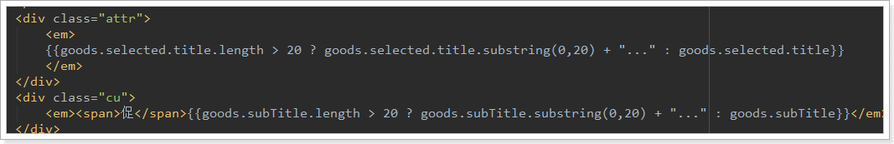
最好在加个悬停展示所有内容的效果
2.3.5.3.sku点击不切换
还有一个错误比较隐蔽，不容易被发现。我们点击sku 的图片列表，发现没有任何变化。
这不科学啊，为什么？
这是因为Vue的自动渲染是基于对象的属性变化的。比如页面使用GoodsList进行渲染，如果GoodsList变化，或者其内部的任何子对象变化，都会Vue感知，从而从新渲染页面。
然而，这一切有一个前提，那就是当你第一次渲染时，对象中有哪些属性，Vue就只监视这些属性，后来添加的属性发生改变，是不会被监视到的。
而我们的goods对象中，本身是没有selected属性的，是我们后来才添加进去的：
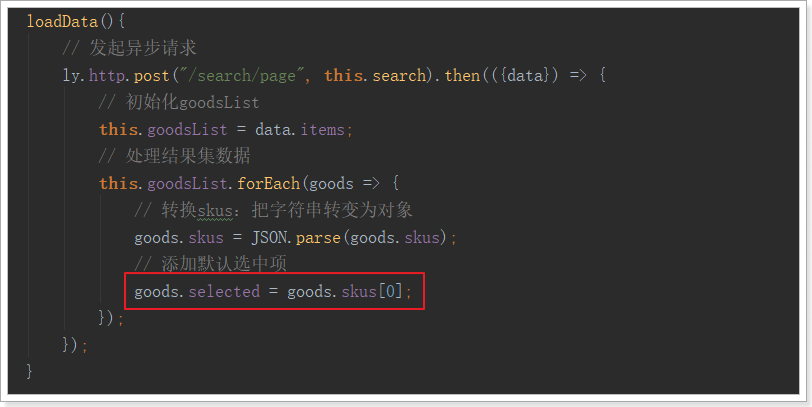
这段代码稍微改造一下，即可：

也就是说，我们先把selected属性初始化完毕，然后才把整个对象赋值给goodsList，这样，goodsList已初始化时就有selected属性，以后就会被正常监控了。

3.页面分页效果
刚才的查询中，我们默认了查询的页码和每页大小，因此所有的分页功能都无法使用，接下来我们一起看看分页功能条该如何制作。
这里要分两步，
- 第一步：如何生成分页条
- 第二步：点击分页按钮，我们做什么
3.1.如何生成分页条
先看下页面关于分页部分的代码：

可以看到所有的分页栏内容都是写死的。
3.1.1.需要的数据
分页数据应该是根据总页数、当前页、总条数等信息来计算得出。
- 当前页：肯定是由页面来决定的，点击按钮会切换到对应的页
- 总页数：需要后台传递给我们
- 总条数：需要后台传递给我们
我们首先在data中记录下这几个值：page-当前页，total-总条数，totalPage-总页数
data: {
ly,
search:{
key: "",
page: 1
},
goodsList:[], // 接收搜索得到的结果
total: 0, // 总条数
totalPage: 0 // 总页数
}因为page是搜索条件之一，所以记录在search对象中。
要注意：我们在created钩子函数中，会读取url路径的参数，然后赋值给search。如果是第一次请求页面，page是不存在的。因此为了避免page被覆盖，我们应该这么做：
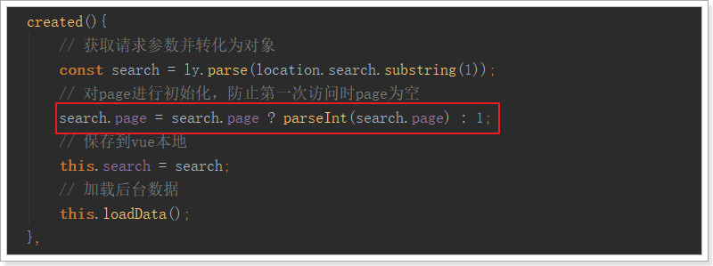
不过，这个时候我们自己的search对象中的值就可有可无了
3.1.2.后台提供数据
后台返回的结果中，要包含total和totalPage，我们改造下刚才的接口：
在我们返回的PageResult对象中，其实是有totalPage字段的：

我们在返回时，把这个值填上：
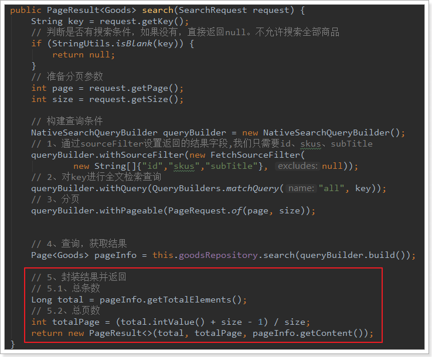
页面测试一下：
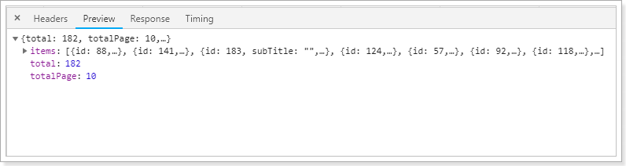
OK
3.1.3.页面计算分页条
首先，把后台提供的数据保存在data中：
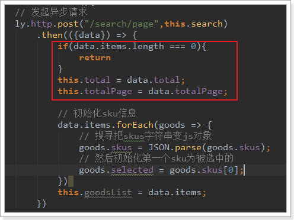
然后看下我们要实现的效果：

这里最复杂的是中间的1~5的分页按钮，它需要动态变化。
思路分析：
- 最多有5个按钮，因此我们可以用
v-for循环从1到5即可 - 但是分页条不一定是从1开始：
- 如果当前页值小于等于3的时候，分页条位置从1开始到5结束
- 如果总页数小于等于5的时候，分页条位置从1开始到总页数结束
- 如果当前页码大于3，应该从page-3开始
- 但是如果当前页码大于totalPage-3，应该从totalPage-5开始
所以，我们的页面这样来做：
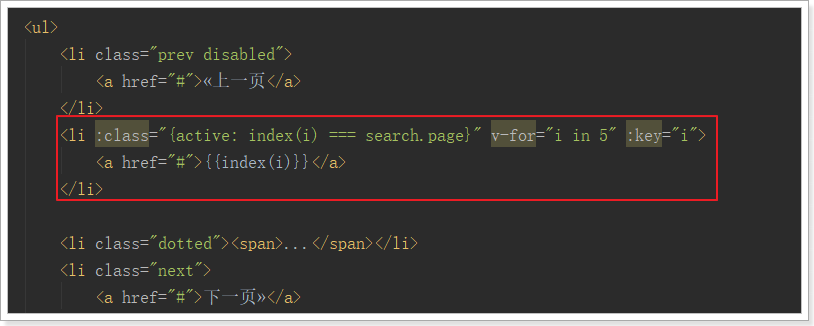
a标签中的分页数字通过index函数来计算，需要把i传递过去：
index(i){
if(this.search.page <= 3 || this.totalPage <= 5){
// 如果当前页小于等于3或者总页数小于等于5
return i;
} else if(this.search.page > 3) {
// 如果当前页大于3
return this.search.page - 3 + i;
} else {
return this.totalPage - 5 + i;
}
}需要注意的是，如果总页数不足5页，我们就不应该遍历15，而是1总页数，稍作改进：

分页条的其它部分就比较简单了：
-
«上一页
-
{{index(i)}}
2020/6/23
- ...
-
下一页»
共{{totalPage}}页
到第
页
3.2.点击分页做什么
点击分页按钮后，自然是要修改page的值
所以，我们在上一页、下一页按钮添加点击事件，对page进行修改，在数字按钮上绑定点击事件，点击直接修改page：

翻页事件的方法：
prevPage(){
if(this.search.page > 1){
this.search.page--
}
},
nextPage(){
if(this.search.page < this.totalPage){
this.search.page++
}
}当page发生变化，我们应该去后台重新查询数据。
不过，如果我们直接发起ajax请求，那么浏览器的地址栏中是不会有变化的，没有记录下分页信息。如果用户刷新页面，那么就会回到第一页。
这样不太友好，我们应该把搜索条件记录在地址栏的查询参数中。
因此，我们监听search的变化，然后把search的过滤字段拼接在url路径后：
watch:{
search:{
deep:true,
handler(val){
// 把search对象变成请求参数，拼接在url路径
window.location.href = "http://www.leyou.com/search.html?" + ly.stringify(val);
}
}
},刷新页面测试，然后就出现重大bug：页面无限刷新！为什么？
因为Vue实例初始化的钩子函数中，我们读取请求参数，赋值给search的时候，也触发了watch监视！也就是说，每次页面创建完成，都会触发watch，然后就会去修改window.location路径，然后页面被刷新，再次触发created钩子，又触发watch，周而复始，无限循环。
所以，我们需要在watch中进行监控，如果发现是第一次初始化，则不继续向下执行。
那么问题是，如何判断是不是第一次？
第一次初始化时，search中的key值肯定是空的，所以，我们这么做：
watch:{
search:{
deep:true,
handler(val,old){
if(!old || !old.key){
// 如果旧的search值为空，或者search中的key为空，证明是第一次
return;
}
// 把search对象变成请求参数，拼接在url路径
window.location.href = "http://www.leyou.com/search.html?" + ly.stringify(val);
}
}
}再次刷新，OK了！
3.3.页面顶部分页条
在页面商品列表的顶部，也有一个分页条：
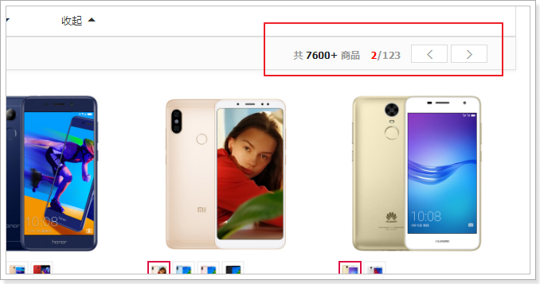
我们把这一部分，也加上点击事件：
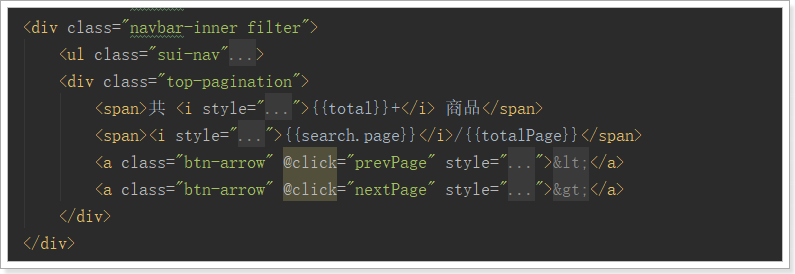
4.排序
4.1.页面搜索排序条件
在搜索商品列表的顶部，有这么一部分内容：

这是用来做排序的，默认按照综合排序。点击新品，应该按照商品创建时间排序，点击价格应该按照价格排序。因为我们没有统计销量和评价，这里咱们以新品和价格为例，进行讲解，做法是想通的。
排序需要知道两个内容：
- 排序的字段
- 排序的方式
因此，我们首先在search中记录这两个信息，因为created钩子函数会对search进行覆盖，因此我们在钩子函数中对这两个信息进行初始化即可：

然后，在页面上给按钮绑定点击事件，修改sortBy和descending的值：
可以看到，页面请求参数中已经有了排序字段了：

4.2.后台添加排序逻辑
接下来，后台需要接收请求参数中的排序信息，然后在搜索中加入排序的逻辑。
现在，我们的请求参数对象SearchRequest中，只有page、key两个字段。需要进行扩展：
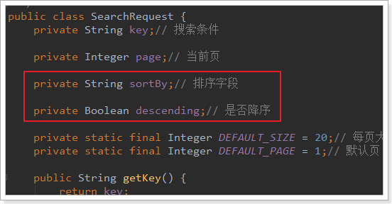
然后在搜索业务逻辑中，添加排序条件：

注意，因为我们存储在索引库中的的价格是一个数组，因此在按照价格排序时，会进行智能处理：
- 如果是价格降序，则会把数组中的最大值拿来排序
- 如果是价格升序，则会把数组中的最小值拿来排序